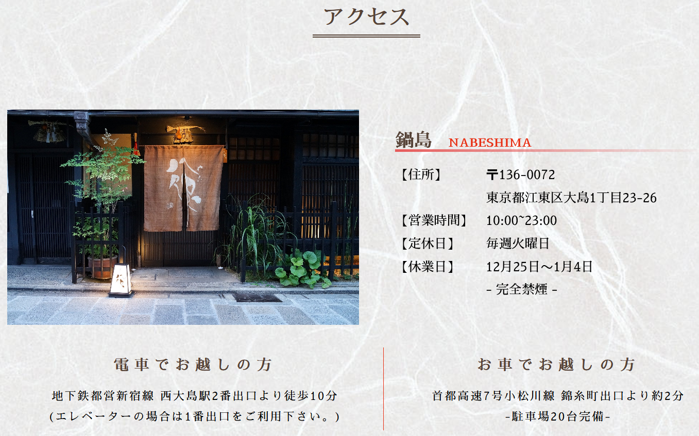
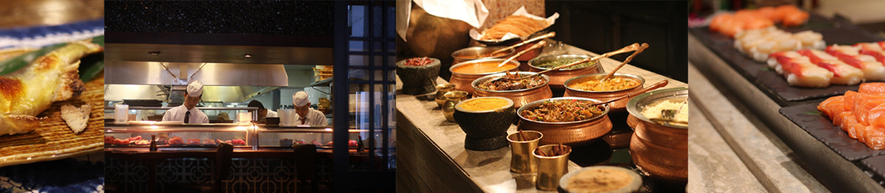

Web Design
鍋島 NABESHIMA

| ■コーディング | TOPページ、CONTACTページ |
|---|---|
| ■使用ソフト&スキル | HTML/CSS、Javascript、jQuery、Dreamweaver |
| ■プロジェクト名 | 「鍋島」 和食レストランのリニューアルサイト |
|---|---|
| ■制作の目的 | ネットからのお問い合わせ、予約を増やし、顧客の増加につなげる。 実際の店舗に行ってみたいと思わせるブランディングを心掛けました。 |
| ■制作期間 | 1.5ヶ月 |
| ■レスポンシブ | スマートフォン/PC |
| ■ターゲット | 30代以降の男女、記念日などで利用する夫婦など |
| ■カラー |
| ■サイトURL | https://github.com/MASAKi-cell/Nabeshima |
|---|---|
| ■GitHub | https://github.com/MASAKi-cell/Nabeshima |
工夫したところ
まず大きな写真でお店の雰囲気を紹介し、料理の写真を多めに掲載することで、食べ物を美味しそうに見せることを心掛けました。
色は食欲のそそる赤などの暖色系を採用しました。
ファーストビューで食材や調理風景を写真で展開させ、 ユーザーに店内の様子を直感的に伝えれるようにしました。

予約方法・交通アクセス・営業時間・定休日を 一緒に掲載し分かりやすく表示しました。

CSSで食材と店内の風景が流れるように表現しました。
西洋の文化にはない縦書きを使用する事で和風と歴史を表現しました。